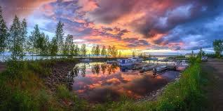
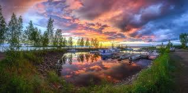

¡Viaja por siempre!


 



Las bellesas
7 de abril del 2018 en Bogotá D.C
Los cuadros abstractos son los mas optados en la actualidad cuando las personas buscan ese elemento que logre dar un toque mas original, envolvente y actualizado en su hogar, donde se eligen principalmente los cuadros de paisajes abstractos. Para hacer un cuadro abstracto lo primero que se debe elegir es el tipo de pintura con la cual se realizará dicho trabajo, en este caso la mas optada debido a la sencillez en su aplicación es el acrílico. Entre los materiales que se han de utilizar para una pintura de paisaje abstracto se encuentran: pincel, diferentes colores de pintura acrílica, lienzo y un recipiente con agua. Lo primero que se debe hacer es colocar una gran gota en el centro del lienzo con pintura blanca. Luego se deben colocar otras gotas de manera aleatoria de otros colores los cuales deben combinar muy bien entre sí, para que así al momento de mezclarlo, el efecto mantenga un mismo equilibrio y logre verse muy bien. Es recomendable añadir mas blancos en otros puntos ya que estos tienden a crear dimensión en los colores y cierta profundidad.
Lo abstracto
31 de Mayo del 2017 en Medellin D.C
En 1906 la artista sueca Hilma Af Klint (1862-1944), pionera del arte abstracto, creó la serie Pinturas para el templo en los que abordan la espiritualidad, la evolución del ser humano y las religiones del mundo. La obra de la artista no se hizo pública hasta 1986, veinte años después de su muerte, por expreso deseo de Klint quien consideraba que su obra no sería entendida por el público. Piet Mondrian fue evolucionando su lenguaje abstracto, de líneas horizontales y verticales con rectángulos de color, entre 1915 y 1919, el neoplasticismo fue la estética que Mondrian, Theo van Doesburg y otros del grupo De Stijl pretendían reformar el medio del futuro. En Italia el futurismo, mezclado con la influencia Bauhaus, guio el camino hacia un arte abstracto con una paleta de color distintivamente cálida como en las obras de Manlio Rho y Mario Radice.
Pablo Picasso
Pablo Ruiz Picasso (Málaga, 25 de octubre de 1881-Mougins, 8 de abril de 1973) fue un pintor y escultor español, creador, junto con Georges Braque, del cubismo. Es considerado desde la génesis del siglo xx como uno de los mayores pintores que participaron en muchos movimientos artísticos que se propagaron por el mundo y ejercieron una gran influencia en otros grandes artistas de su tiempo. Sus trabajos están presentes en museos y colecciones de toda Europa y del mundo. Además, abordó otros géneros como el dibujo, el grabado, la ilustración de libros, la escultura, la cerámica y el diseño de escenografía y vestuario para montajes teatrales. También tiene una breve obra literaria. En lo político, Picasso se declaraba pacifista y comunista. Fue miembro del Partido Comunista de España y del Partido Comunista Francés hasta su muerte,2 acaecida el 8 de abril de 1973 a los noventa y un años de edad, en su casa llamada «Notre-Dame-de-Vie»34 de la localidad francesa de Mougins. Está enterrado en el parque del castillo de Vauvenargues (Bouches-du-Rhone).